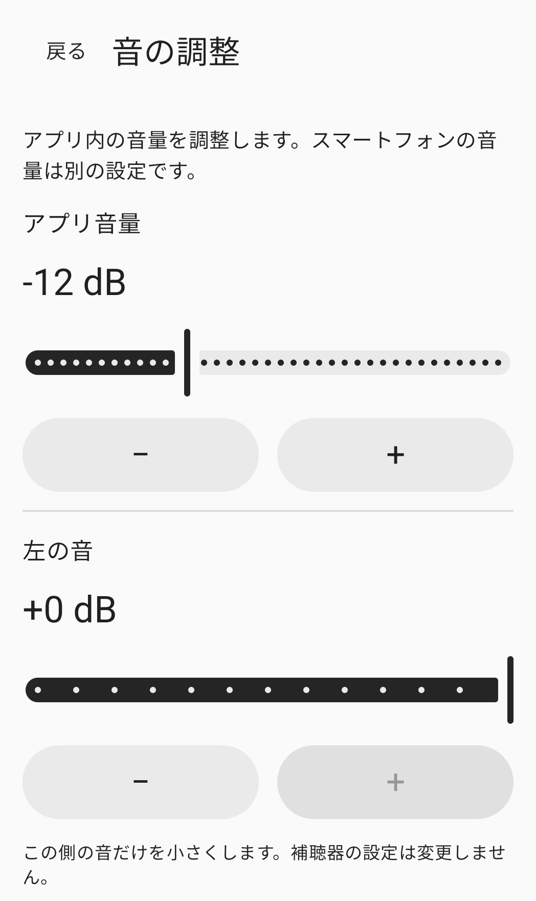

周囲の音を手動で調整
身近な音を、自分で調整。
スマートフォンのマイクで拾った音を、選択したイヤホンへ送ります。音量・左右・音色を自分で調整できます。
使い方を見る現在、一般公開前です。

使い方
接続して、調整して、開始。
接続
イヤホンをこのスマートフォンに接続し、アプリで出力先を選びます。標準は有線・USBです。Bluetoothを使う場合は、実験モードを有効にし、接続済みの出力先を自分で選んでください。
調整
アプリの音量、左右、音色を調整します。スマートフォンのメディア音量は別の設定です。イヤホンを装着し、小さな音量で準備してください。
開始
マイクの使用を許可し、セッションの案内を確認してから、同意・開始ボタンを押します。許可するだけではマイクは起動しません。アプリまたはセッション通知から停止できます。
音の調整
調整する内容を自分で選べます。
アプリ内の調整値とスマートフォンのメディア音量は別の設定です。
アプリの音量
選択したイヤホンへ送る音の大きさをアプリで調整します。スマートフォンのメディア音量も確認してください。
左と右
左右それぞれの音を下げて調整します。イヤホンや補聴器本体の設定は変更しません。
音色
音色を手動で調整します。聴力検査の結果に基づく自動補正機能ではありません。
上の画像は実際の音調整画面の一部です。右側と音色の調整部分は画像に含まれていません。
よくある質問
使い始める前に
Bluetoothイヤホンも使えますか？
Bluetoothは実験モードです。このスマートフォンにイヤホンを接続し、実験モードを有効にして、出力先を自分で選んでください。遅延や音質はスマートフォンとイヤホンによって異なります。
イヤホンを再接続すると、自動で再開しますか？
いいえ。音声の出力経路、オーディオフォーカス、またはマイクの権限が失われると、セッションは終了します。イヤホンの再接続やアプリの再起動だけでは再開しません。準備ができたら、明示的に開始してください。
イヤホンが一覧に表示されない場合は？
このスマートフォンのBluetoothメディアオーディオ接続を確認し、出力先の一覧を更新してください。詳しくはサポートページをご覧ください。
録音ファイルやアプリのデータを削除するには？
アプリはマイクの録音ファイルを作成しません。端末内の音設定、権限のリクエスト履歴、任意で保存した直近の試験記録の削除については、ローカルデータの案内をご覧ください。
ご利用前にご確認ください。
通常の聴力を持つ18歳以上の成人を対象とした、周囲の音を手動で調整するツールです。難聴の補正、補聴器の代替、聴力検査、診断、治療を目的とするものではありません。
会話の明瞭さ、実際の遅延、音響上の安全性は検証されていません。完全なノイズ除去や遅延ゼロは保証しません。
アプリはまだストアで一般公開されていません。このサイトは製品情報とサポートを提供しています。